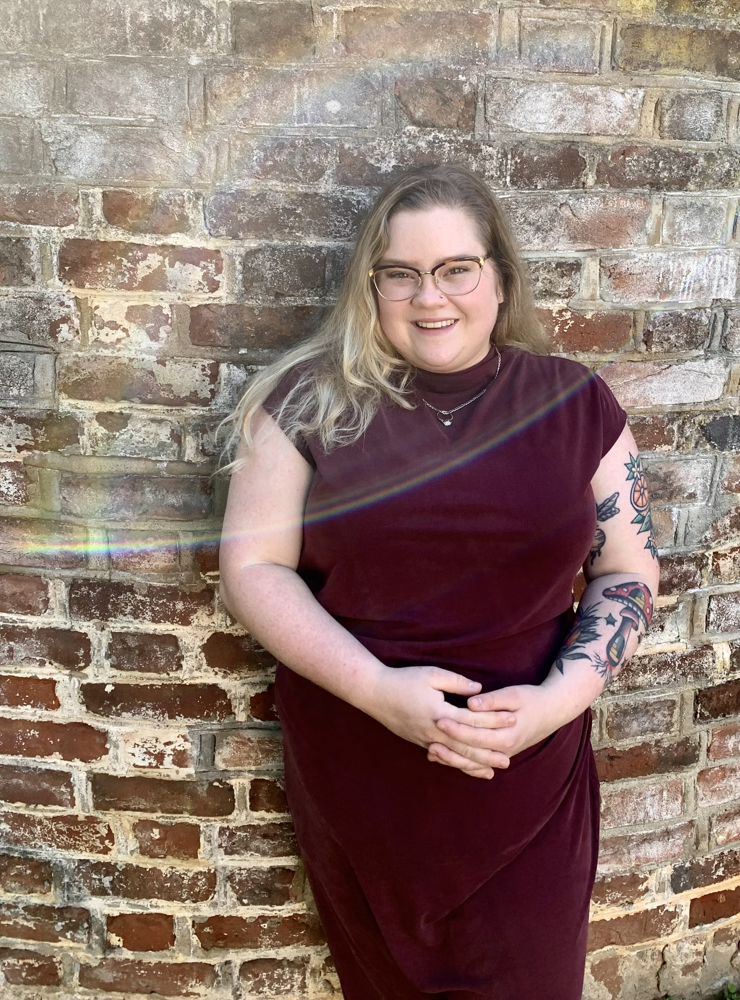

Leise Robey-Crandall

Summary
I am an enthusiastic and committed web developer with extensive experience in exceeding client needs and building relationships.
Education
Master of Science, Computer Science
Northeastern University (2022-2024)
GPA: 4.0
Bachelor of Arts, English
University of Mary Washington (2015-2019)
Projects
-
Glaucoma Discovery Platform Redesign - The Jackson Laboratory
- Conducted stakeholder interviews and user research to identify key feature enhancements for
existing genetics data visualization platform
- Led redesign of application interface to align with brand standards and improve usability
- Implemented updated components for graph visualization of large genetics datasets
- Migrated application from Ruby On Rails to Angular to ensure continued support and scalability
-
Maine Student Book Award Web Application - ReMo Literacy
- Collaborated with multidisciplinary team to design and develop web application for tracking student
participation in literacy program
- Utilized Agile Scrum methodology to deliver application prototype using React within 3 months
- Developed a RESTful API using Node.js to integrate application with MongoDB Atlas
- Provided comprehensive documentation to ensure maintainability for ReMo developers
Work Experience
Skills
- HTML, CSS, JavaScript, React, AngularJS, MongoDB, MySQL, PostgreSQL, Java, Python
- Flexible in fast-paced environments
- Excellent verbal and written communication
- Highly motivated and independent learner
Other